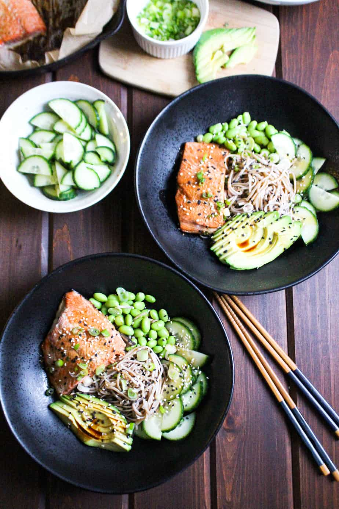

Salmon Soba Noodle

Description
This is an all time classic Salmon Soba Noodles, made just spicy enough so my wife doesn't eat it all, but it lets the flavours flow through. It's made using boneless pork ribs which just fall apart
Ingredients
- Boneless pork ribs 2lb (Cubed)
- 1 Large onion (Diced)
- Red Kidney beans 12 oz can
- 16oz Jar of Tomato Sauce (sugo)
- 1 Tbsp Paprika
- Chilli seasoning 1 packet
- 1 Bunch Coriander
Method
- Brown the onions in a medium pan over medium heat. Continue until caramelized
- Add cubed pork to the pan, ensuring browning all over
- Add paprika and chilli seasoning, stirring and cooking until aromas rise
- Pour in Tomato Sauce and simmer on low to medium for 30 minutes
- Chop coriander and stir through sauce. At this point you can serve over rice. If you have the time, continue simmering over low heat for up to 3 hours so the meat becomes tender and flavours intensify